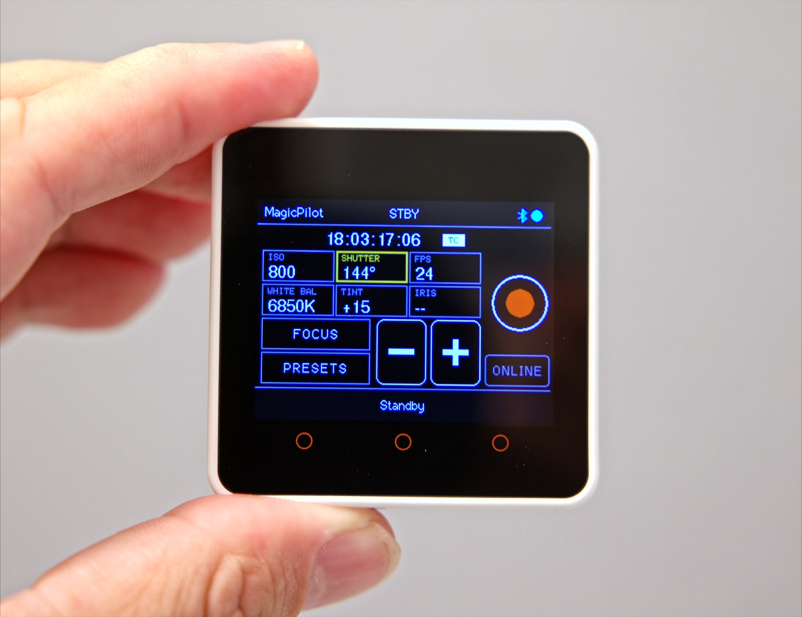
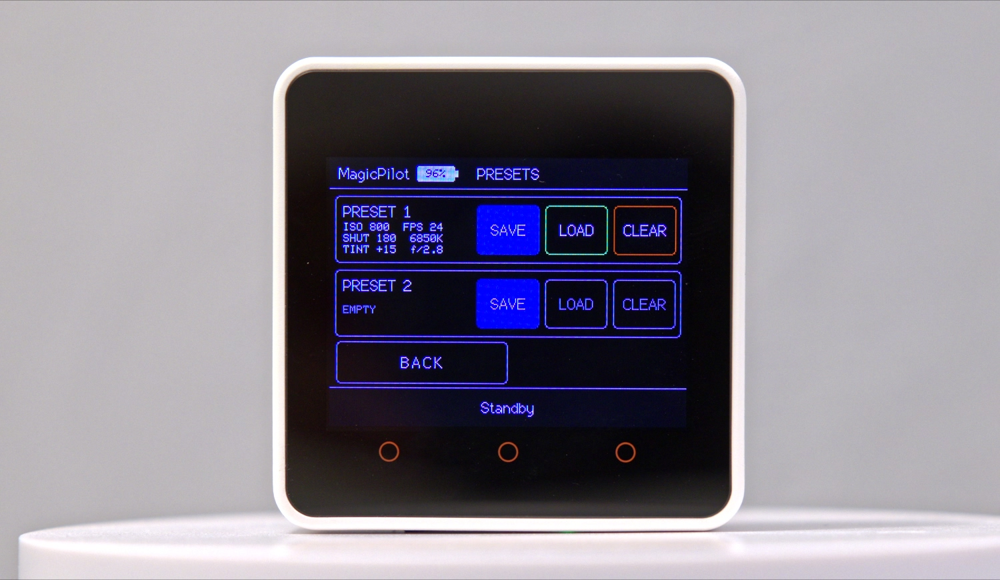

Why use a Bluetooth remote for your Blackmagic camera?
Next to your external monitor. An external monitor is brighter than the camera's built-in screen, so that is where you look. MagicPilot mounts right beside it, so the settings are in your line of sight.
When the camera is out of reach. With the camera against a wall or mounted very high, such as on a crane or jib, the remote changes settings and starts or stops recording from wherever you stand.
Features
🔭 Wireless focus control
NEAR → FAR slider, 1% steps and one-shot autofocus.
📊 Live camera readout
ISO, shutter angle, FPS, white balance, tint, iris, timecode, battery and card status.
🎛️ Exposure control
Tap a value, then use − / + to change it on the camera.
🎥 Record start / stop
Start and stop recording with one button.
💾 Camera presets
Save and recall two complete camera configurations on microSD.
☀️ Automatic brightness
The CoreS3 adapts its backlight to ambient light.
Demo video
Camera presets

Hardware
- M5Stack Core2, CoreS3 or CoreS3-SE: ESP32 touchscreen module that runs the firmware
- Blackmagic Pocket Cinema Camera 6K with Bluetooth enabled
- microSD card (optional, for presets)
Build and flash with the Arduino IDE or PlatformIO.
Camera compatibility
| Camera | Status |
|---|---|
| Blackmagic Pocket Cinema Camera 6K (BMPCC6K) | 🟢 Supported |
| Blackmagic Pocket Cinema Camera 6K G2 | 🟡 Not tested |
| Blackmagic Pocket Cinema Camera 6K Pro | 🟡 Not tested |
| Blackmagic Pocket Cinema Camera 4K (BMPCC4K) | 🟡 Not tested |
Frequently asked questions
How do I control a Blackmagic Pocket Cinema Camera 6K remotely without a phone?
Flash MagicPilot onto an M5Stack Core2, CoreS3 or CoreS3-SE and switch on Bluetooth on the camera. The remote connects directly over Bluetooth LE, so you don't need a phone, tablet, Wi-Fi network or the Blackmagic Camera app.
Can MagicPilot pull focus on a BMPCC6K?
Yes. The focus page has a NEAR → FAR slider, − / + buttons in 1% steps and a one-shot autofocus button. It works with lenses the camera can drive electronically.
Which Blackmagic cameras are supported?
The Blackmagic Pocket Cinema Camera 6K is tested. Other cameras that implement the Blackmagic Camera Control Bluetooth protocol, such as the BMPCC 6K G2, 6K Pro and 4K, may work but haven't been tested yet.
What hardware do I need?
An M5Stack Core2, CoreS3 or CoreS3-SE ESP32 touchscreen module, and optionally a microSD card for presets.
Is MagicPilot free?
Yes. MagicPilot is open-source firmware licensed under the LGPL-3.0.